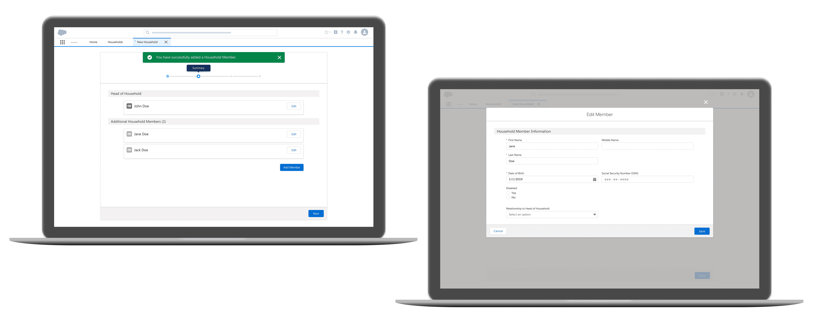

Deloitte Digital
Modernizing a federal aid program's legacy system with Salesforce
Contributions: Information architecture, mockups, design documentation
Platform: Web
Tools: Sketch, Abstract
Time: June 2019 - August 2019
During my internship, I worked on a cross-functional product team supporting a federal agency client in the Salesforce replacement of their 30-year-old management system. I collaborated with the team's product owners, architects, and lead designer on the flow used for program applicant registration and certification. Sensitive details regarding the client and project have been omitted from descriptions and screens.
The challenge
The client's 30-year-old legacy system is used to register and certify applicants into federal aid program serving 90,000+ monthly participants from 270+ organizations. How might we ease the transition from the legacy system to its Salesforce replacement for this flow?
Understanding the legacy system
Explaining the Household
To participate in the federal aid program, applicants must have their information entered into the system's digital form under a Household account. Each Household is made up of one Head of Household and optional Household Members.

Distinguishing information entry
In the legacy system, general Household details like address, phone number, etc., were stored under the Head of Household rather than the overall Household. Because of how data is stored in Salesforce, Household details had to be under an account rather than an individual contact, which meant creating an explicit section for Household information entry.
Working around lack of user research
User observations of the legacy system had not yet been scheduled, so we had to make assumptions of legacy system operation. To try to supplement the lack of user research, we used the following to navigate our design:
Constructing an IA for the legacy system
In order for the team to understand all of the functionalities from the legacy system that had to be replaced (beyond the registration/certification flow), I created the information architecture with some help from our lead designer. I can't share it here, but please reach out if you would like to talk more about the IA.
Figuring out the flow steps
Round 1: Building off of our previous OOTB flow
Originally, we were going to use the Salesforce Out-of-the-Box (OOTB) Flow Builder, but the limited screen components compromised the user experience. After demoing the OOTB flow, the team got approval to build a custom flow using the wider range of components offered by the Salesforce Lightning Design System.
The OOTB flow had four steps. Household and Head of Household details were inputted in the same step to maintain their original association, but within that step, they were separated into different sections to reinforce the distinction.
Creating our first mockups with the design system
I identified components from the Salesforce Lightning Design System that could be used for our flow and took a first pass at creating our Sketch mockups.
I unfortunately don't have images of our screen iterations, but you can follow our thought process with my doodles! Since we used a design system, the main visual changes were seen in the layout of the form components.
Round 2: Streamlining the process
From our documentation, we knew that the typical Household size was 1-2 people, meaning we could streamline the flow by combining the Household and Certification steps (i.e. the minimum amount of information required to complete the flow). This would allow users to skip the second step in a typical Household creation.
Round 3: Finding informational dependencies
Reviewing our designs with the product manager revealed an important information dependency that wasn't documented from the OOTB flow. Certification details (e.g. length of certification) depend on Household members' inputted details, but we had revised the OOTB flow to have Certification grouped into our very first step. This meant we couldn't consider additional Household Members into certification. I then revised the flow to separate Certification as its own step again and included relevant read-only Household information to inform these inputs.
Round 4: Submitting vs. saving along the way
While designing, we assumed that users would be able to save their progress as they go and submit on the last page based on standard online forms. Design reviews with our team architects revealed that information records in Salesforce must be created (i.e. submitted) after each step/form page, which meant saving inputs along the way wasn't possible.
Our lead designer incorporated the ability to edit Household step inputs in a Summary step, which replaced the Household Members step. This allowed users to recover from information entry errors. I updated button language to indicate creation rather than progression. The last step was revised to become a confirmation page rather than a summary page for form submission.
Handoff and approval
Securing client approval
Our mockups, along with a list of Salesforce Lightning Design System components used, were handed off to team architects to create the flow that was presented by product managers to our client and approved!
Reinforcing our design decisions
I created a client deliverable connecting each of our design decisions to Nielsen's heuristics, other best practices like the 8-point grid system, and constraints we found through iterations.
This document would prevent conflicts stemming from lack of design documentation (like we saw in Round 3 of figuring out the flow steps) and align all product and client team members with our design, which was especially important since we didn't have explicit user insights to back us up. Please reach out if you would like to discuss the full deliverable.
Final screens
Step 1: Household
Where users submit Head of Household and Household information. The left screen shows the Household step with empty input fields while the right screen shows the error case with a banner and in-line messages.

Step 2: Summary
Where users edit Head of Household and Household information or add/edit/submit Household Member information. The left screen shows the overall summary display with Head of Household and Household Member cards. The Head of Household card contains general Household details, which maintains consistency with the legacy system's combination of the two, allowing for an easier transition. The right screen shows the modal for editing Household Members, which is essentially the same as the modal for adding Members.
Steps 3-4: Certification and confirmation
Where users submit Household certification information and view Household creation confirmation. The left screen shows the certification step with relevant read-only fields for reference. The right screen shows the confirmation step with the Household name.

What I learned
The traditional UX process isn't always possible on a real client project. This was my first experience designing something to fruition outside of a controlled classroom environment, and I learned some of the basic constraints of designing in the real world. From not having user observations to being restricted by backend implementation, I had to recognize that design processes are unique to each project and move onto other alternative solutions.